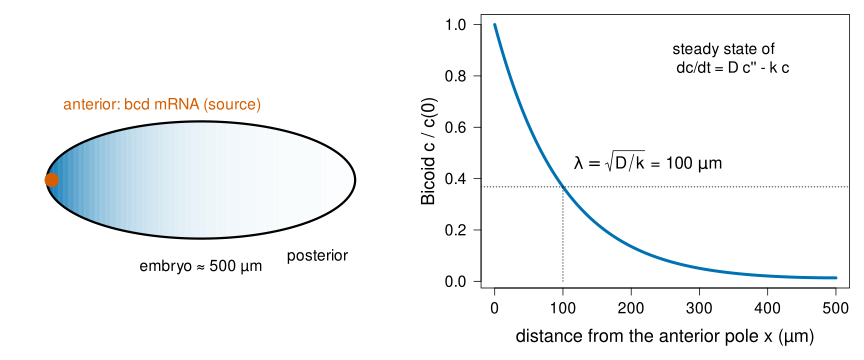
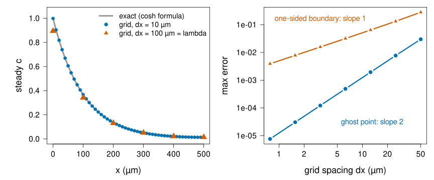
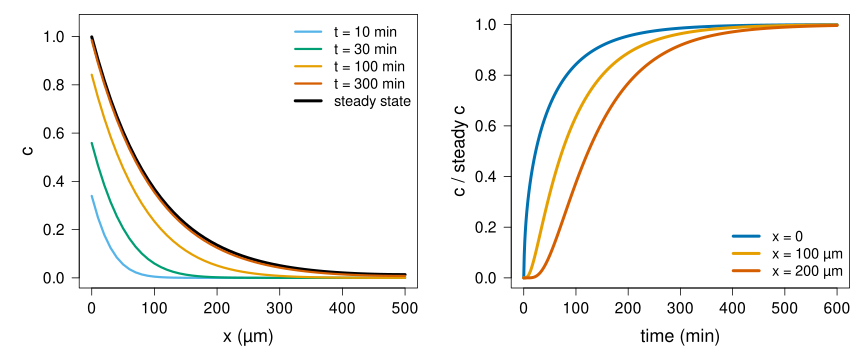
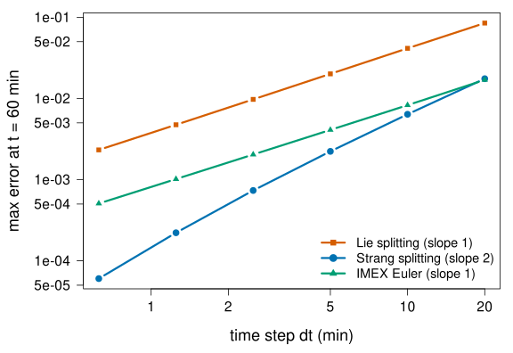
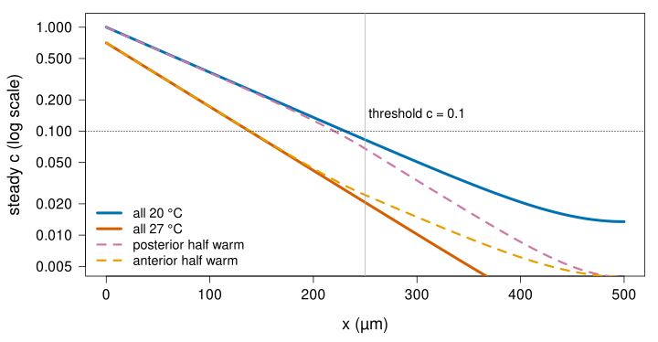
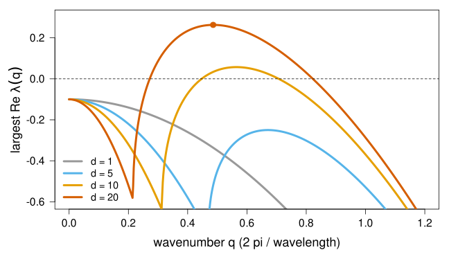
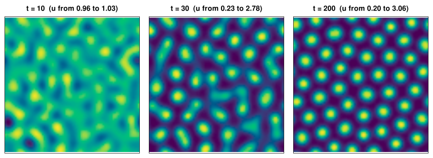
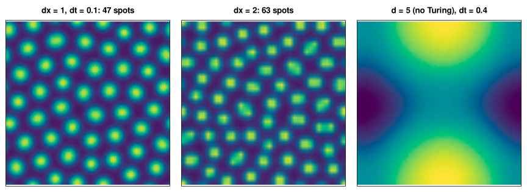

Part 10 — Diffusion and heat: finite-difference PDEs
Numerical analysis for biologists
About this lecture
So far in Part 10 molecules only moved. In an embryo they are also made and destroyed: \partial c/\partial t = D\,\partial^2 c/\partial x^2 + f(c). The reaction term f changes what the equation can do.
Synthesis–diffusion–degradation: a source and first-order decay give an exponential gradient with decay length\lambda = \sqrt{D/k}. We check the grid against the exact solution.
IMEX (diffusion implicit, reaction explicit) and operator splitting: two ways to treat the two terms differently. Each has its own error and its own failure.
Turing patterns: two species, a uniform state that is stable without diffusion becomes unstable with it. Eigenvalues of a 2 × 2 matrix per wavenumber say which wavelengths grow.
A 2D simulation in a few seconds, and the checks that separate a real pattern from a numerical artefact.
Biology: the Bicoid gradient and the temperature-step experiment [M1]; embryo trap arrays [M3]; Fgf8 in zebrafish [M4].
Biology: the Bicoid gradient

bicoid mRNA sits at the anterior pole of the Drosophila egg. The protein spreads and is degraded: high at the head end, low at the tail. Target genes read the concentration as position.
Reported values (approximate): decay length \approx 100 µm, about 1/5 of the 500 µm egg; protein lifetime tens of minutes; D from about 0.3 µm²/s (FRAP) to about 7 µm²/s (FCS).
Recap: what you already have
Morphogen in a row of cells (Structure: symmetric, banded, sparse):
exchange rate 1 per min, decay k = 0.01 per min, source in cell 1,
a tridiagonal system, solved by thomas(a, b, c, d) in O(n),
decay length \sqrt{D/k} = 10 cells.
Diffusion on a grid (The diffusion (heat) equation by finite differences, Implicit schemes and the method of lines):
nodes x_i = i\,\Delta x, stencil (1, -2, 1)/\Delta x^2, ghost points for no flux,
FTCS needs D\,\Delta t/\Delta x^2 \le 1/2,
backward Euler: no step limit, one Thomas solve per step.
Today: the row of cells is a diffusion grid with \Delta x = one cell. With \Delta x = 10 µm, exchange at 1 per min means D = 1 \cdot 10^2 = 100 µm²/min.
Adding a reaction term
Mass balance per slice, now with production and decay:
\frac{\partial c}{\partial t} = \underbrace{D\,\frac{\partial^2 c}{\partial x^2}}_{\text{diffusion}} \; \underbrace{-\,k\,c}_{\text{decay}}, \qquad 0 < x < L
Source: an influx j at the anterior pole, -D\,\partial c/\partial x = j at x = 0. Wall at the posterior pole: \partial c/\partial x = 0 at x = L.
Numbers: D = 100 µm²/min, k = 0.01 per min, L = 500 µm; j is chosen so that c(0) \approx 1.
A molecule lives about 1/k and moves about \sqrt{2D/k} in that time: the gradient reaches about \lambda before it is degraded.
D
1/k (lifetime)
\lambda
our running example
100 µm²/min
100 min
100 µm
Bicoid (approx.)
0.3–7 µm²/s
30–50 min
≈ 100 µm
Fgf8, zebrafish [M4] (approx.)
≈ 50 µm²/s
≈ 13 min (inferred)
≈ 200 µm
c falls by e every \lambda. A threshold c_T is crossed at x_T = \lambda\ln(c_0/c_T): for c_0/c_T = 10, x_T = 230 µm.
\lambda depends on the ratioD/k. Double both: same gradient, formed twice as fast.
Steady state on the grid
D <-100; k <-0.01; L <-500# µm^2/min, 1/min, µmlam <-sqrt(D / k); j <- D / lam # lambda = 100 µm, c(0) close to 1N <-50; dx <- L / N; x <- (0:N) * dx; r <- D / dx^2lo <-c(0, rep(-r, N -1), -2* r) # -D c'' with ghost points:di <-rep(2* r, N +1) # both end rows get a 2up <-c(-2* r, rep(-r, N -1), 0)src <-c(2* j / dx, rep(0, N)) # the influx enters via the ghost pointcs <-thomas(lo, di + k, up, src) # (-D c'' + k c) = srcexact <- j * lam / D *cosh((L - x) / lam) /sinh(L / lam)max(abs(cs - exact))# [1] 0.001247396
Ghost point at x = 0: c_{-1} = c_1 + 2\Delta x\, j/D (the slope is -j/D). At x = L: c_{N+1} = c_{N-1}.
Check against the exact solution

Ghost point: error falls 4× per halving of \Delta x (order 2). With \Delta x = \lambda (orange) the shape is still right to about 10 %.
Failure: the one-sided boundary (c_1 - c_0)/\Delta x = -j/D is only first order, and it breaks the mass balance: k\int c\,dx should equal j; at \Delta x = 50 µm it is 1.32\,j.
How fast does the gradient form?

Start from c = 0. Near the source the gradient is ready in about 1/k; further away it takes longer.
Local accumulation time\tau(x) = \int_0^\infty \bigl(1 - c(x,t)/c_s(x)\bigr)\,dt. Numerically: 50.2, 100.0, 150.3 min at x = 0, 100, 200 µm. Formula for a long embryo: (1 + x/\lambda)/(2k) = 50, 100, 150 min.
Two terms, two time scales
Euler on the method-of-lines system \mathbf c' = -K_D\mathbf c - k\,\mathbf c + \mathbf s must be stable for both parts:
part
fastest rate
Euler needs
here (\Delta x = 10 µm)
diffusion
4D/\Delta x^2
\Delta t \le \Delta x^2/(2D)
0.5 min; at \Delta x = 1 µm: 0.005 min
decay
k
\Delta t \le 2/k
200 min
fast receptor binding
\approx 1 per s
\Delta t \le 2 s
Diffusion on a fine grid is stiff (Stiffness and implicit methods): treat it implicitly. That is a linear, tridiagonal solve.
Reactions are often nonlinear (Hill functions, u^2v) but local. Fully implicit means a Newton solve with the coupled Jacobian every step.
Idea: implicit where it is cheap and needed, explicit where it is not.
imex <-function(c, dt, nsteps, f) { # f(c): reaction, explicitfor (n inseq_len(nsteps)) c <-thomas(dt * lo, 1+ dt * di, dt * up, c + dt * (f(c) + src)) c}f <-function(c) -k * c # linear decayfor (dt inc(1, 10, 50)) # run to t = 5000 min, compare with csprint(max(abs(imex(rep(0, N +1), dt, 5000/ dt, f) - cs)))# [1] 2.38698e-14# [1] 1.121325e-14# [1] 1.076916e-14
One Thomas solve per step, any f, no Newton; order 1. The steady state is exact for every \Delta t (\Delta t cancels at a fixed point).
When IMEX fails
One Fourier mode e^{iqx}, with linear decay f = -kc: each step multiplies it by
G(q) = \frac{1 - k\,\Delta t}{1 + D q^2\,\Delta t}.
The denominator \ge 1: the diffusion part never limits \Delta t.
The numerator is Euler on the reaction: |1 - k\Delta t| \le 1 needs \Delta t \le 2/k, and the uniform mode (q = 0) gets no help from diffusion.
Fast receptor binding at 1 per s: IMEX needs \Delta t \le 2 s, as slow as explicit diffusion on a 30 µm grid.
Check: compute \Delta t\,\lambda for the eigenvalues \lambda of the reaction Jacobian, and stay inside Euler’s stability region (|1 + \Delta t\lambda| \le 1).
Operator splitting
Write \mathbf c' = \mathcal A\mathbf c + \mathcal B\mathbf c with \mathcal A = diffusion (with the influx), \mathcal B = reaction. Solve each part on its own, one after the other:
Lie splitting: \Delta t of diffusion, then \Delta t of reaction.
for (s in1:nsteps) { # both parts done exactly here lie <-exp(-kx * dt) *diffuse(lie, dt) strang <-exp(-kx * dt /2) *diffuse(exp(-kx * dt /2) * strang, dt)}
Each sub-problem gets its best solver: diffusion by a tridiagonal solve (or FFT), the decay exactly, a stiff reaction by an ODE solver per grid point.
The splitting error

Error at t = 60 min against the exact solution of the grid ODEs. Lie: slope 1. Strang: slope 2 (for small steps). IMEX: slope 1.
Exact sub-steps, still an error: doing \mathcal A then \mathcal B is not doing both at once unless they commute, \mathcal{AB} = \mathcal{BA}.
Here they do not: the influx at x = 0 is decayed only in the reaction step. With no source and uniform k the error is 10^{-15} (exercise).
A temperature step across the embryo [M1]

Lucchetta et al. held a Drosophila embryo between two laminar streams at different temperatures (about 20 and 27 °C), so its halves develop at different speeds [M1].
Model (synthetic, assumed): k doubles in the warm half; D, j unchanged.
Where is c = 0.1? All cold: 230.7 µm. All warm: 138.3 µm. Posterior warm: 220.2 µm. Anterior warm: 138.9 µm.
k(x) varies, so Lie splitting has an error; IMEX and a steady solve do not care.
Measuring gradients in many embryos
Embryo trap arrays [M3]: a microfluidic array that holds many Drosophila embryos upright, so the Dorsal gradient around the embryo’s circumference can be imaged in hundreds of embryos at once. Many embryos → a distribution of gradient shapes, not one curve.
Fgf8 in zebrafish [M4]: a source–sink gradient. FCS gave a diffusion coefficient (order 50 µm²/s); the profile gave \lambda (order 200 µm). Then k = D/\lambda^2 \approx 1.3\cdot10^{-3} per s: degradation inferred, not measured. Blocking receptor-mediated uptake (endocytosis) flattens the gradient, as \lambda = \sqrt{D/k} predicts.
Exercise (synthetic): fit \lambda to 20 noisy profiles by a straight line through \log c: 200.3 \pm 12.2 µm. With a background of 0.05 added: 229.9 µm. The log fit is biased by any offset.
Turing’s idea: diffusion can destabilise
Two species, an activator u and a substrate v (Schnakenberg model, dimensionless):
\frac{\partial u}{\partial t} = a - u + u^2 v + \nabla^2 u, \qquad \frac{\partial v}{\partial t} = b - u^2 v + d\,\nabla^2 v
a = 0.1, b = 0.9: uniform steady state u^* = a + b = 1, v^* = b/(a+b)^2 = 0.9.
Without diffusion it is stable: Jacobian J = \begin{pmatrix} 0.8 & 1 \\ -1.8 & -1 \end{pmatrix}, trace -0.2, det 1 (Equilibria, stability and the phase plane).
With v diffusing d times faster than u: some wavelengths grow. Spots or stripes appear from noise.
Linear stability, one wavelength at a time
Perturb the uniform state by \boldsymbol\delta(t)\cos(qx). Then \nabla^2 \to -q^2, and
\frac{d\boldsymbol\delta}{dt} = \bigl(J - q^2\,\mathrm{diag}(1, d)\bigr)\,\boldsymbol\delta \qquad\text{a 2 × 2 matrix for each } q.
Unstable for 0.272 < q < 0.822; fastest growth at wavelength \approx 12.9, rate 0.263.
The dispersion relation

d = 1, 5: every q decays. d = 10, 20: a band of unstable wavelengths.
Trace of J - q^2\,\mathrm{diag}(1, d) is -0.2 - q^2(1 + d) < 0 always, so instability needs \det < 0: a real eigenvalue crossing 0, a pattern that stands still.
\det = d\,q^4 - (0.8d - 1)\,q^2 + 1. Negative for some q only if d > d_c = 8.57.
A 2D simulation: IMEX with the FFT
N <-80; dx <-1; dt <-0.1; d <-20; a <-0.1; b <-0.9# periodic 80 x 80s <-4/ dx^2*sin(pi * (0:(N -1)) / N)^2kap <-outer(s, s, "+") # five-point Laplacian in Fourier spacez <-lcg(2* N^2) -0.5# small noise (same numbers in Python, Rust)u <-matrix(1+0.02* z[1:N^2], N); v <-matrix(0.9+0.02* z[-(1:N^2)], N)solve_diff <-function(w, Dw) # solves (I - dt Dw Laplacian) w_new = wRe(fft(fft(w) / (1+ dt * Dw * kap), inverse =TRUE)) / N^2for (n in1:2000) { # to t = 200 f <- a - u + u^2* v; g <- b - u^2* v # reaction: explicit u <-solve_diff(u + dt * f, 1); v <-solve_diff(v + dt * g, d) # diffusion: implicit}
Periodic grid: fft diagonalises the five-point Laplacian, so the implicit solve is a division. 2 s in R.
The pattern forms

From 1 % noise: a mixture of wavelengths at t = 10, spots by t = 30, a nearly hexagonal array of 47 spots at t = 200.
Pattern or artefact?

\Delta x = 1 and 0.5: 47 and 46 spots. \Delta x = 2: 63 spots, smaller and blocky. Only 6 grid points per wavelength: the grid changed the answer.
Right: d = 5 has no Turing instability, yet \Delta t = 0.4 produces large blobs. With \Delta t = 0.1: uniform, as theory says.
Why the time step made a pattern
for (dt inc(0.1, 0.2, 0.4)) # Euler factor of the q = 0 modeprint(max(Mod(eigen(diag(2) + dt * J)$values)))# [1] 0.9949874# [1] 1# [1] 1.03923
The reaction Jacobian has eigenvalues -0.1 \pm 0.995i: a weakly damped oscillator. Euler is stable on it only for \Delta t < 0.2 (Initial value problems and Euler’s method).
Long waves get almost no damping from implicit diffusion, so they grow by 4 % per step: the “pattern” is the time step.
Check: the pattern must not change when \Delta t is halved, and |1 + \Delta t\lambda| \le 1 for the reaction eigenvalues. (For d = 20: 48, 48, 47, 47 spots at \Delta t = 0.4, 0.2, 0.1, 0.05.)
Before you trust a reaction–diffusion simulation
Resolution: at least ~10 grid points per decay length or per pattern wavelength. Refine \Delta x; the answer (threshold position, spot spacing, spot count) must not move.
Time step: halve \Delta t; nothing should change. Explicit reaction: |1 + \Delta t\lambda| \le 1 for the reaction eigenvalues; explicit diffusion: D\Delta t/\Delta x^2 \le 1/2 (1D), \le 1/4 (2D).
Exact solutions and invariants: steady state vs \lambda = \sqrt{D/k} formula; mass balance k\int c = j; uniform state unchanged without noise.
Linear theory: the band of growing wavelengths from the 2 × 2 eigenvalues should match the early pattern. A pattern where theory says none: suspect the method.
Boundaries: second-order (ghost points); periodic vs walls changes the pattern near edges.
Splitting: Lie is first order even with exact sub-steps; prefer Strang, or check with a smaller \Delta t.
Summary
Reaction–diffusion: \partial c/\partial t = D\,\nabla^2 c + f(c). Synthesis–diffusion–degradation gives an exponential gradient with decay length\lambda = \sqrt{D/k}: 100 µm for our Bicoid-like numbers.
On the grid: ghost-point boundaries (order 2), one Thomas solve. Checks: exact cosh solution, mass balancek\int c = j, refinement. A one-sided boundary is order 1 and breaks mass balance.
IMEX Euler: diffusion implicit (no step limit), reaction explicit (any f, no Newton). Limited by Euler on the reaction: \Delta t \le 2/k; the steady state is exact for any \Delta t.
Splitting: Lie (order 1), Strang (order 2); an error even with exact sub-steps, unless the parts commute (they do not with a source or k(x)).
Turing: per wavenumber, eigenvalues of J - q^2\,\mathrm{diag}(D_u, D_v). Here a band of growing wavelengths for d > 8.57.
Artefacts: a too-coarse grid changes the spot count (63 vs 47); a too-large \Delta t makes a “pattern” where there is none. Refine both.
What you can now do
Numbers (Part 1): predict rounding, overflow and cancellation; read the order of a method off a log–log error plot.
Equations (Parts 2–4): solve nonlinear equations and linear systems, use structure (banded, sparse), know when a fit or a solve is ill-conditioned.
Eigenvalues and approximation (Parts 5–7): compute eigenvalues and the SVD, interpolate, differentiate and integrate numerically, use the FFT.
Dynamics (Part 8): integrate ODEs with step-size control, recognise stiffness, classify steady states.
Fitting (Part 9): optimise, fit models to data, and ask whether the parameters are identifiable.
Space (Part 10): turn a PDE into a grid, choose explicit or implicit time stepping, and check the result.
Above all: every method can fail, and you know the check that catches it: an exact case, a refinement, an invariant, a second method.